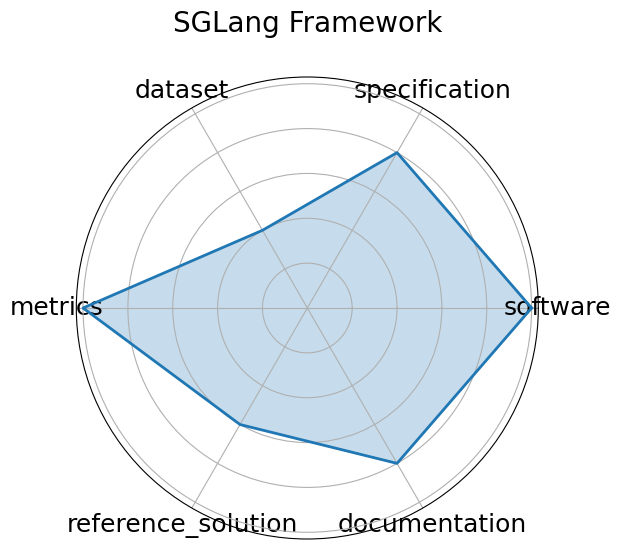

Edit: edit this entry
Date: 2023-12-12
Name: SGLang Framework
Domain: LLM Vision
Focus: Fast serving framework for LLMs and vision-language models
Keywords: LLM serving, vision-language, RadixAttention, performance, JSON decoding
Task Types: Model serving framework
Metrics: Tokens/sec, Time-to-first-token, Throughput gain vs baseline
Models: LLaVA, DeepSeek, Llama
Citation:
Lianmin Zheng, Liangsheng Yin, Zhiqiang Xie, Chuyue Sun, Jeff Huang, Cody Hao Yu, Shiyi Cao, Christos Kozyrakis, Ion Stoica, Joseph E. Gonzalez, Clark Barrett, and Ying Sheng. Sglang: efficient execution of structured language model programs. 2024. URL: https://arxiv.org/abs/2312.07104, arXiv:2312.07104.
bibtex: ``` @misc{zheng2024sglangefficientexecutionstructured,
archiveprefix = {arXiv},
author = {Lianmin Zheng and Liangsheng Yin and Zhiqiang Xie and Chuyue Sun and Jeff Huang and Cody Hao Yu and Shiyi Cao and Christos Kozyrakis and Ion Stoica and Joseph E. Gonzalez and Clark Barrett and Ying Sheng},
eprint = {2312.07104},
primaryclass = {cs.AI},
title = {SGLang: Efficient Execution of Structured Language Model Programs},
url = {https://arxiv.org/abs/2312.07104},
year = {2024}}
```
Ratings:
Software:
Rating: 5
Reason: Actively maintained and production-deployed e.g., xAI, NVIDIA ; source code available under Apache 2.0. Includes efficient backends RadixAttention, quantization, batching and full serving infrastructure.
Specification:
Rating: 4
Reason: The framework clearly defines performance targets, serving logic, and model integration. Input/output expectations are consistent, but not all benchmarks are standardized.
Dataset:
Rating: 2
Reason: Does not introduce new datasets; instead, it evaluates performance using existing model benchmarks. Only configuration files are included.
Metrics:
Rating: 5
Reason: Serving-related metrics such as tokens/sec, time-to-first-token, and throughput gain vs. baselines are well-defined and consistently applied.
Reference Solution:
Rating: 3
Reason: Provides benchmark configs and example integrations e.g., with LLaVA, DeepSeek , but not all models or scripts are runnable out-of-the-box.
Documentation:
Rating: 4
Reason: Strong GitHub documentation, install guides, and benchmarks. Some advanced topics e.g., scaling, hardware tuning could use deeper walkthroughs.
Average Rating: 3.833
Radar Plot: 